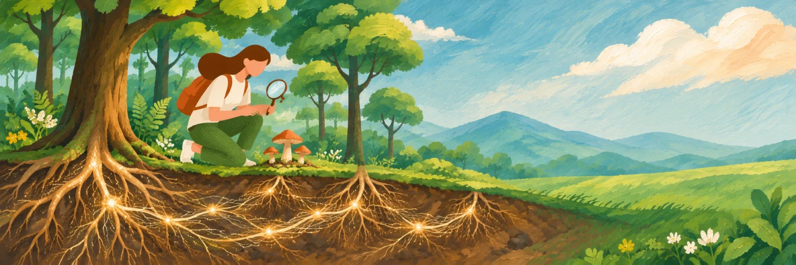

Как устроен лес:
подземнаясеть
Мы привыкли видеть лес как множество отдельных деревьев. Но под ногами, в лесной подстилке и почве, деревья связаны тончайшими нитями грибов — километрами живых волокон, которые меняют сахар на воду и минералы. Этот союз старше самих деревьев, и без него не было бы ни лесов, ни, возможно, жизни на суше. Разбираемся, как работает подземная сеть, что в популярных рассказах о «лесном интернете» правда, а что красивое преувеличение, и что это значит для тех, кто выращивает и бережёт лес.
Что у вас под ногами
Осенью, когда в лесу появляются грибы, мы думаем, что видим грибы. На самом деле мы видим только их плоды — как яблоко на яблоне. Сам гриб — это грибница, или мицелий: сеть тончайших нитей-гиф, каждая в десятки раз тоньше человеческого волоса. Она пронизывает лесную подстилку и почву, и в одном грамме лесной почвы могут уместиться метры и даже десятки метров этих нитей.
Разгребите аккуратно верхний слой листвы или хвои под старой елью. Вы, скорее всего, увидите белые, иногда желтоватые паутинки, оплетающие корешки и комочки земли. Это и есть грибница. А теперь самое интересное: многие из этих нитей не просто живут рядом с корнями деревьев. Они срастаются с ними в единый орган, который называется микоризой — от греческих слов «гриб» и «корень».
В эссе «Дерево из воздуха» мы выяснили, что дерево почти целиком сделано из углекислого газа и воды, а из почвы берёт всего около процента массы — минералы. Так вот, этот процент дерево во многом получает не само, а через грибы.
Самая выгодная сделка в лесу
У дерева есть то, чего нет у гриба: способность делать сахар из воздуха и солнечного света. У гриба есть то, чего нет у дерева: тончайшие нити, которые проникают в микроскопические поры почвы, куда не пролезет ни один корень, и умеют растворять минералы, недоступные корням. Союз напрашивается сам собой.
Дерево отправляет грибу часть сахаров, сделанных из воздуха. Оценки разнятся, но речь может идти о заметной доле — до пятой части всего, что дерево произвело фотосинтезом. Взамен гриб приносит воду и то, что для дерева в почве труднее всего достать: азот, фосфор, микроэлементы. Гриб фактически многократно увеличивает «поисковую» поверхность корней.
Но и это не всё. Грибная оболочка вокруг корней защищает их от болезнетворных микробов, от некоторых тяжёлых металлов, помогает пережить засуху. Деревья без микоризы во многих лесах просто не выживают: опыт лесников, пытавшихся сажать сосну на землях, где никогда не было соснового леса, показал это ещё в XX веке — саженцы чахли, пока к ним не подсаживали землю из настоящего соснового бора.
Два способа дружить
Микориза бывает разной. Для лесов средней полосы важны два главных типа, и их полезно различать.
Почему подберёзовик растёт под берёзой, а маслёнок — под сосной? Потому что это партнёры по эктомикоризе. Многие лесные грибы не могут жить без своего дерева, а дерево — без своих грибов. Попытки выращивать белый гриб на плантациях до сих пор не увенчались массовым успехом именно потому, что ему нужен живой партнёр-дерево.
Старше деревьев
Около 450 миллионов лет назад суша была почти голой: камни, песок, плёнки бактерий и водорослей у воды. Первые растения, выходившие из воды, не имели настоящих корней. Как они добывали минералы из камней? Окаменелости из шотландского местечка Райни, возрастом около 400 миллионов лет, сохранили удивительную картину: в тканях древнейших наземных растений уже видны грибы, очень похожие на нынешнюю арбускулярную микоризу.
Многие биологи считают, что именно этот союз помог растениям выйти на сушу: гриб добывал минералы, растение — сахар. Деревья, леса, почвы появились позже — и все они выросли на этом древнем партнёрстве. Получается, что сотрудничество двух совершенно разных организмов стоит у самого начала зелёной суши.
Это хорошая поправка к привычной картине природы как «борьбы за существование». Конкуренция в лесу, конечно, есть — за свет, воду, пространство. Но фундамент леса — взаимовыгодный обмен.
«Лесной интернет»: правда и легенда
В 1997 году канадский эколог Сюзанн Симард опубликовала в журнале Nature работу, которая сделала подземную сеть знаменитой. Она пометила углерод в воздухе вокруг молодых берёз и пихт и обнаружила, что часть этого углерода через почву переходит от одного дерева к другому. Журнал вынес на обложку выражение «wood wide web» — «всемирная лесная паутина».
За следующие два десятилетия идея превратилась в одну из самых популярных историй о природе. В книгах и фильмах рассказывают, что деревья через грибные сети «разговаривают», предупреждают друг друга об опасности, а старые «деревья-матери» подкармливают своих детей в тени. Это захватывающий образ. Но насколько он подтверждён?
В 2023 году группа исследователей во главе с Джастином Карстом пересмотрела полевые исследования на эту тему и пришла к трезвому выводу: часть популярных утверждений опирается на очень скромные данные, а некоторые результаты при цитировании стали звучать увереннее, чем были на самом деле.
Важно понять, что из этого следует. Это не значит, что Симард ошибалась или что подземной сети нет. Обмен между деревьями и грибами — бесспорный факт, а сама идея, что лес — это связанная система, а не набор отдельных стволов, верна и полезна. Неясны масштаб и смысл перетоков между деревьями. Скорее всего, лес не похож ни на «интернет», ни на «семью» — он похож на сложный рынок, где грибы и деревья обмениваются ресурсами, и у каждого свои интересы.
Для нас из этой истории есть важный урок о науке. Красивая метафора помогает людям полюбить лес — и это ценно. Но если она становится сильнее фактов, ей перестают верить, когда факты уточняются. Любить лес можно и без преувеличений: реальная картина и так удивительна.
Грибы и углерод в почве
В эссе о деревьях мы писали, что почти половина углерода лесов хранится не в стволах, а в почве. Грибы играют в этом большую роль. Сахара, которые деревья отправляют вниз, частично становятся телом грибницы. Когда гифы отмирают, их остатки — особенно прочные вещества клеточных стенок — могут долго сохраняться в почве и становиться частью гумуса.
Исследования показывают, что в лесах, где преобладают деревья с эктомикоризой, почвы в среднем накапливают больше углерода, чем в лесах с арбускулярной микоризой при сопоставимых условиях. Отчасти потому, что эктомикоризные грибы конкурируют с другими микробами-разрушителями за азот и тем самым замедляют разложение.
Звучит соблазнительно: давайте выращивать грибы и спасать климат. Но здесь нужна осторожность. Большая часть углерода, который уходит в грибы, довольно быстро возвращается в воздух при дыхании грибов. Сколько остаётся надолго, учёные пока оценивают с большим разбросом. Надёжный вывод проще: здоровая, ненарушенная лесная почва с её грибницей — огромное и хрупкое хранилище углерода, которое легко разрушить вырубкой, пожаром и распашкой и очень долго восстанавливать.
Что из этого следует для нас
- добавить в горшок горсть лесной почвы из-под того же вида дерева — вместе с ней придут «свои» грибы
- не перекармливать удобрениями: при избытке азота и фосфора деревья «экономят» на грибах
- сажать маленькие саженцы с комом земли, не отряхивая корни
- не сгребать листву и хвою под деревьями — это дом и еда для грибницы
- собирать грибы аккуратно, не разрывая подстилку граблями и палками
- не вытаптывать — уплотнённая почва душит гифы и корни
- меньше перекапывать — каждая перекопка рвёт грибные сети
- мульчировать почву листвой, щепой, скошенной травой
- оставлять старые пни и упавшие ветки в «диких» уголках
Особенно это важно для тех, кто занимается лесным активизмом. Горсть почвы из-под родительского дерева в горшке с жёлудем — не суеверие, а вполне научный приём: так молодое деревце сразу получает своих партнёров. Лесные питомники давно используют похожие приёмы, а для посадок на нарушенных землях — шахтных отвалах, гарях — применяют и специальные препараты с грибами. Правда, эффективность покупных «микоризных» смесей сильно разнится, и местная лесная почва часто работает не хуже.
Честный взгляд
Не всё «сотрудничество» — дружба. Микориза — взаимовыгодный обмен, но у каждой стороны свои интересы. Есть растения, которые используют грибную сеть, ничего не давая взамен: например, бесхлорофилльные подъельник и некоторые орхидеи живут за счёт грибов, которые сами кормятся от деревьев. Природа не моральна — в ней есть и партнёрство, и паразитизм.
Метафоры работают в обе стороны. «Деревья разговаривают», «лес — это семья», «интернет под землёй» — образы, которые вдохновляют. Но их легко принять за доказанные факты, а потом разочароваться. Честнее говорить: лес — сложная связанная система, и мы только начинаем её понимать.
Почва — плохо изученный мир. По разным оценкам, большая часть видов почвенных грибов ещё даже не описана. Мы охраняем тигров и журавлей, но почти не думаем о тех, кто держит на себе лес. Это одна из главных причин беречь старые, ненарушенные леса: восстановить посадками разнообразие подземной жизни гораздо труднее, чем вырастить деревья.
Итог: лес — это не только деревья
Под каждым лесом есть второй, невидимый лес — грибница, сплетённая с корнями деревьев. Дерево отдаёт ей часть сахара, сделанного из воздуха, а получает воду, азот, фосфор и защиту. Этот союз вывел жизнь на сушу сотни миллионов лет назад и до сих пор держит на себе леса, почвы и огромные запасы углерода.
Не всё, что рассказывают о «лесном интернете», подтверждено. Но и без красивых преувеличений подземная сеть — одно из самых удивительных открытий в биологии. И одно из самых практичных: выращивая дерево, стоит вырастить и его подземных партнёров; гуляя по лесу — помнить, что идёшь по крыше огромного живого мира.
Читайте также: Дерево из воздуха · Лесной активизм: вырастить лес своими руками · Круговорот углерода: одна лишняя стрелка · Стрелка назад: возврат вещества · Заповедник: идея охраны природы, которая не про нас
- Smith S. E., Read D. J. Mycorrhizal Symbiosis, 3rd ed. (2008).
- Brundrett M. C., Tedersoo L. (2018). Evolutionary history of mycorrhizal symbioses and global host plant diversity. New Phytologist 220, 1108–1115.
- Remy W., Taylor T. N., Hass H., Kerp H. (1994). Four hundred-million-year-old vesicular arbuscular mycorrhizae. PNAS 91, 11841–11843.
- Simard S. W. et al. (1997). Net transfer of carbon between ectomycorrhizal tree species in the field. Nature 388, 579–582.
- Karst J., Jones M. D., Hoeksema J. D. (2023). Positive citation bias and overinterpreted results lead to misinformation on common mycorrhizal networks in forests. Nature Ecology & Evolution 7, 501–511.
- Averill C., Turner B. L., Finzi A. C. (2014). Mycorrhiza-mediated competition between plants and decomposers drives soil carbon storage. Nature 505, 543–545.
- Clemmensen K. E. et al. (2013). Roots and associated fungi drive long-term carbon sequestration in boreal forest. Science 339, 1615–1618.
- Hawkins H.-J. et al. (2023). Mycorrhizal mycelium as a global carbon pool. Current Biology 33, R560–R573.